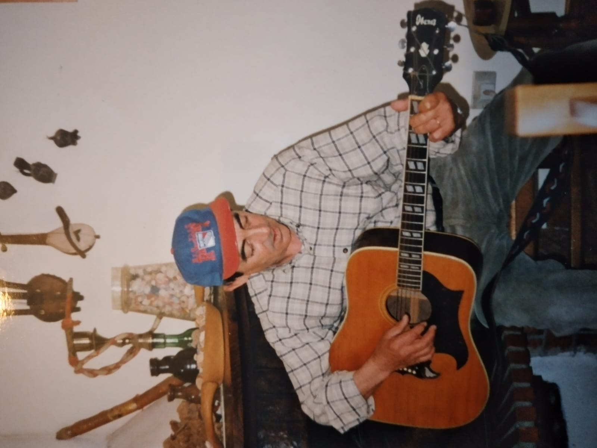
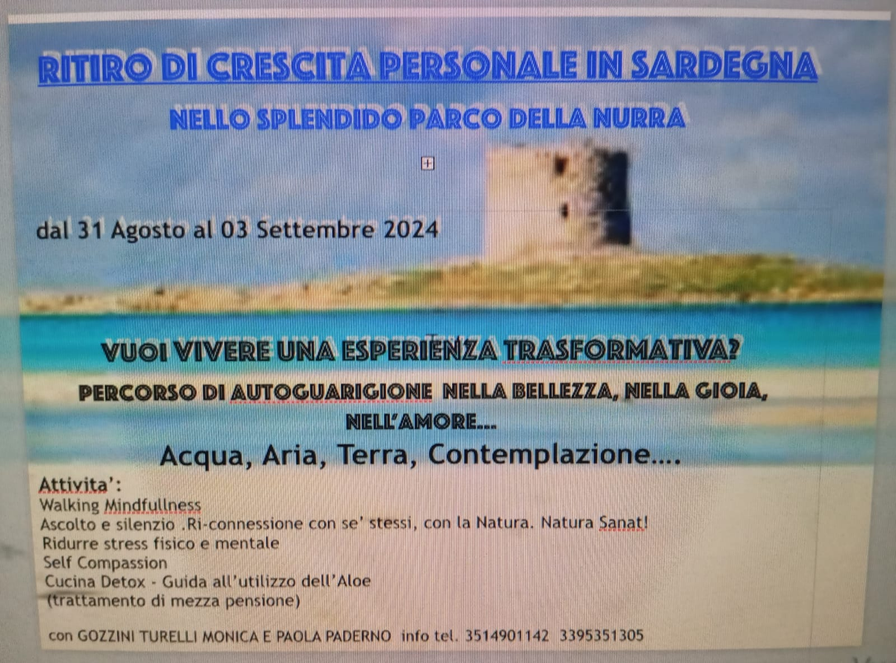

“Ubuntu [...] speaks of the very essence of being human. [We] say [...] "Hey,
so-and-so has ubuntu." Then you are generous, you are hospitable, you are
friendly and caring and compassionate. You share what you have. It is to say,
"My humanity is caught up, is inextricably bound up, in yours." We belong in a
bundle of life. We say, "A person is a person through other persons.”
Desmond Tutu
Considero la mia vita un Dono, opportunita’ unica, irripetibile.
"So di non sapere”, ma scelgo di affidarmi. Scelgo di considerare il tempo che
ho a disposizione come un mistero, ma anche come una grande ricchezza.
Essere consapevole che la Vita è un dono mi incoraggia a vivere con
gratitudine.
Ricevere un Dono implica la consapevolezza e la responsabilita’ della
condivisione.
Come dice Desmond Tutu nell'UBUNTU, IO SONO PERCHE’ NOI SIAMO. Tutto è
in relazione.
LA STORIA CHE LE CONTIENE TUTTE
“Ogni istante di vita è un miracolo. Io ci sono, potrei non esserci…
Odissea… viaggio.
Il seme viene depositato nel grembo, in milioni si muovono, come una marea,
come un torrente che corre verso l’acqua madre, essi avanzano ostacolo dopo
ostacolo.
Agitando il loro flagelli si dirigono verso la meta, affrontando un ambiente che
li ostacola, sottoposti a dure prove. L’ambiente è ostile, potenti correnti
frenano la navigazione, il passaggio in un tunnel ostacola l’avanzata…
Moriranno tutti, tutti tranne uno.
L’incontenibile forza della vita spinge in avanti, ed eccolo l’astro misterioso,
grandissimo, potente, bello come il sole alla fine del tunnel, dove la
moltitudine si è già persa per la fatica immensa.
Uno solo entrerà, uno solo si fonderà. Raramente piu’ di uno, ed il mistero si fa
ancora piu’ grande.
Sono passati tanti anni, ma quella infinitamente piccola parte di me portava
con sé il mio segreto, il mio profondo sé.
Ultima agitazione, possibilità, sforzo, passione, e l’altra parte di me mi lascia
entrare.
Appena entra, la corazza diventa invalicabile, per tutti gli altri è finita.
Il vincitore libera il patrimonio scritto nei suoi geni, si fonde, ovulo e
spermatozoo diventano UNO…
da questa unione nasce un’unica cellula.
Eccomi,
fra milioni di possibilità io sono qui. Ho vinto la mia corsa, io.
Sono morti tutti, tranne uno.
La lotteria della vita.
Da ora in poi tutto è già scritto, il processo si accelera, comincia la divisione, la
duplicazione… E comincia il tamtam della vita attraverso il cuore.
Stupore… da una cellula si generano miliardi di cellule, processi di altissima
definizione suddividono, specializzano, e ogni cellula è al suo posto.
Dicono che quando il seme incontra l’ovulo si sprigionino scintille di luce.
La mia storia è questa. La storia di te che leggi è questa.
Tutte le volte che perderai qualcosa, che arriverai ultimo o non fra i
primi, tutte le volte che altri saranno prima di te e ti sentirai senza
valore, non dimenticare…
Eccomi, fra milioni di possibilità io sono qui. Ho vinto la mia corsa, io.
Alla lotteria della vita sono stato vincitore, forse l’unica vera battaglia che
nella vita vale la pena di vincere. “
MONICA
(da “Una Collana di Perle dal SudAfrica” Ed.Albatros di Gozzini Turelli Monica
Franca)
GRAZIE PAPA'
Ciao papà
Siamo qui tutti insieme per salutarti e per dirti GRAZIE.
GRAZIE per averci insegnato fin da bambini che la felicita' non centra niente con i soldi. La felicità che ci hai insegnato tu con il tuo esempio, non con le parole, è dentro di noi, ed e' fuori nelle "piccole cose". Felicità è andare nel bosco in autunno a raccogliere i funghi, le castagne. Felicita' è andare a fare la legna perche' il fuoco del camino acceso, fa famiglia, non porta solo calore, è una medicina per l'anima. La felicità e'nei frutti della Terra. L'orto è stata la tua grande nursery, hai fatto germogliare e curato con amore frutti prelibati, sempre con la schiena china... ricordo quando raccoglievi i pomodori, li mettevi in un cestino di paglia, sistemati con grazia. Li portavi in casa e ti brillavano gli occhi. Che dono papa' la tua verdura, che sfarzo di colori, insalate, noci, i fichi raccolti... Che maestria, che senso dell'onore, e quanta dolcezza e saggezza in questi gesti pieni d'amore! Siamo stati felici di cantare tutti insieme mentre tu suonavi la chitarra o l'armonica. Felicita' erano le nostre voci che a diverse altezze diventavano una voce sola, la canzone era il risultato del nostro "lavoro in team" e ci faceva commuovere per la gioia e per il senso profondo di appartenenza e di condivisione. Felicita' era vederti ballare con la mamma alle sagre del paese, Ci insegnavate cosa è la complicita' in amore, due che diventavano uno nel tango, nei valzer, figure piene di eleganza. Felicita' era sentire i tuoi racconti, immaginare e assaporare il cielo e la terra del deserto attraverso le tue parole, era l'amore per i viaggi, per la scoperta, l'amore per tutti i paesaggi di madre terra. Grazie papà per avere amato i nostri figli e per essere stato un Nonno eccezionale con il bastone e con il cappello. Un Nonno di pochi baci ma che ti avvolge con lo sguardo e ti fa sentire al sicuro, un Nonno di quelli che ti insegnano una saggezza antica che porterai sempre con te e che costituisce Il ponte tra il passato e il futuro. Un Nonno che costruisce le casette sugli alberi e che raccoglie fiori nel prato.
Nonno Luigi...
Grazie papà per non avere mai perso la tua voglia di ridere o di fare una battuta anche nel momento della sofferenza, perché ci ha insegnato che la felicità è da trovare in qualsiasi momento, anche in quelli piu' difficili. In questi ultimi anni dove la malattia ti ha portato via tutta l'autonomia e la possibilita' di vivere le tue passioni, sei sempre stato capace di essere felice per le piccole cose: un pasto buono, una bella canzone da ascoltare alla radio, i nipoti, le persone che venivano a trovarti. Hai avuto un sorriso per tutti, un sorriso vero non di circostanza e una battuta di spirito, come un cuore bambino che portava leggerezza intorno a se'.
Grazie a tutti coloro che hanno curato il papa' nella malattia, ai miei fratelli, ma sopratutto un Grazie grandissimo a te mamma, per tutto quello che hai fatto per lui, per averlo tenuto in vita con le tue amorose cure. Qualcuno ha chiamato tutto questo "sacrificio". Ma tu mamma ci hai insegnato che l'amore non è mai sacrificio. Puo' essere una fatica immensa, e' notti insonni, e a volte purtroppo è una sofferenza grande, ma l'unico vero sacrificio e' perdere le persone che amiamo. Grazie alla nostra sorella Manuela per tutto l'aiuto che ha dato al nostro papà e alla nostra mamma, senza mai fermarsi.
Papa', sei riuscito a farci innamorare tutti.
Non so dove sei ora, ma so dove resterai,
per sempre...
qui con me.
Grazie
Monica

L'ERRORE, LA COLPA, LA RIPARAZIONE...
APPLICAZIONE DELLA PEDAGOGIA “DELL'ERRORE E DELLA
RIPARAZIONE” PER L'INCLUSIONE DI STUDENTI CON DISTURBI DEL
COMPORTAMENTO
di Monica Franca Gozzini Turelli
“Ubuntu [...] speaks of the very essence of being human. [We ] say [...] "Hey, so-and-so has ubuntu."
Then you are generous, you are hospitable, you are friendly and caring and compassionate. You share
what you have. It is to say, "My humanity is caught up, is inextricably bound up, in yours." We belong
in a bundle of life. We say, "A person is a person through other persons.”
Desmond Tutu
INTRODUZIONE
L’invito a guardare dentro di noi adulti, a crescere attraverso la relazione con gli altri, ad essere sempre
consapevoli di cosa è il percorso di un’educazione che può essere oggi solo interculturale e
permanente, porta alla necessità di una pedagogia che affondi profonde radici nell’etica.
Una pedagogia che si prende cura di “un bambino che ha un nome”, con i suoi bisogni, le sue esigenze,
le sue necessità; con le sue emozioni, la sua storia e le sue appartenenze. Un bambino “intero”, non
solo il suo “pezzo cognitivo” da certificare perché disturbato nell’apprendimento e portatore di
disabilità, o da esaltare attribuendo alla valutazione disciplinare, quella dei voti, un significato molto
più ampio e spesso distorto.
Ognuno di noi ha dei doni speciali: tutti noi siamo abili, abilissimi in qualche settore, e disabili in
altro; l'idea di inclusività è parte di questa pedagogia: se l’attenzione non è solo focalizzata al
“cognitivo”, la scuola è un luogo di apprendimento che valorizza tutti, la disabilità ci appartiene, è una
condizione di vita.
Un insegnamento irrinunciabile che la scuola, la famiglia e la società dovrebbero promuovere per
l’obiettivo di Stare bene con se’, stare bene con gli altri è la formazione del cittadino eticamente
fondato. Tutto il nostro agire quotidiano dovrebbe essere rivolto alla costruzione del CIVES, che
crede nei valori della pace, della fratellanza, della sacralità della vita e del pianeta, Cives che diventa
protagonista, costruttore e fruitore della Civitas.
L’impegno passa dal SAPERE e dal SAPER FARE,
perché non esiste una intelligenza della testa e una delle mani; le intelligenze sono multiple, non sono
in ordine gerarchico, sono complementari l’una all’altra, insieme costituiscono il legame nelle opere
realizzate dall’uomo stesso.
Io vorrei promuovere una riflessione sul SAPER ESSERE come
prerequisito e condizione del sapere e del sapere fare.
Quello che siamo è il sottofondo, l’armonia sulla
quale scrivere ogni giorno la melodia di tutto ciò che si fa in classe. Nella scuola dove presto servizio
in qualità di Dirigente Scolastico, abbiamo deciso di dichiarare la Mission della nostra scuola in un
manifesto condiviso che parli del Sapere Essere.
La Mission* è ispirazione e guida, ci ricorda chi siamo e dove vogliamo andare, ci aiuta a indirizzare il
nostro comportamento ed è fondamentale nella scuola di oggi, fatta di mille appartenenze, colori,
diversità, passioni, intelligenze.
*La Mission dell'Istituto Superiore L.Gigli di Rovato Bs
NOI DEL GIGLI
Crediamo che la MISSION della nostra scuola sia contribuire alla formazione del
CIVIS ETICAMENTE FONDATO
COSTRUTTORE E FRUITORE DELLA CIVILTA’ CHE CREDE NEI VALORI DELLA PACE, DELLA FRATELLANZA E DELLA SACRALITÀ DELLA VITA E DEL PIANETA.
NOI DEL GIGLI CI IMPEGNIAMO
a raggiungere questo obiettivo attraverso
il SAPERE
Il processo di insegnamento e di apprendimento promuove l'acquisizione delle conoscenze e di nuove forme di pensiero, sviluppa il ragionamento critico e
favorisce l' auto-apprendimento. La didattica si avvarrà di nuovi strumenti frutto dello sviluppo tecnologico e digitale.
Il SAPER FARE
Il cittadino eticamente fondato è consapevole dell'importanza della condivisione. Obiettivo è trasformare le conoscenze in competenze per metterle a
disposizione e al servizio degli altri, per co-costruire una società migliore attraverso l'apporto attivo di ogni individuo.
il SAPER ESSERE
La consapevolezza che la persona è un’unità di mente, di cuore, di anima e di emozioni... La consapevolezza che qualsiasi forma di apprendimento
avviene attraverso il rispetto della persona intera, unità bio-psico-sociale. La consapevolezza che siamo tutti collegati, che tutto è in relazione, l’umanità
con il pianeta, il pianeta con l’universo. La consapevolezza che il nostro agire condiziona e si riverbera sulla vita di chi è intorno a noi ed è determinante
per le generazioni future.
NOI DEL GIGLI PROMUOVIAMO
la capacità di entrare in una relazione di aiuto,
la bontà e la generosità,
la condivisione, il mettersi a disposizione e il saper prendersi cura di...
in quanto condizioni sine qua non e obiettivi per costruire un nuovo Umanesimo in sintonia con la MISSIONE della nostra istituzione.
UNA PEDAGOGIA INCLUSIVA PER UN NUOVO UMANESIMO
Nell' Istituto sono presenti 5 indirizzi liceali, 3 indirizzi professionali e 3 Corsi IeFP*. Gli IeFP sono i
corsi di Istruzione e Formazione Professionale regionale di durata triennale a frequenza solo maschile,
e riguardano le seguenti qualifiche: operatore elettrico, operatore meccanico e riparatore di veicoli a
motore.
Chi sono gli studenti indirizzati dai Docenti della Scuola Secondaria di Primo Grado verso i corsi
triennali regionali? Sono quegli studenti che “non sono mai andati bene a scuola”, che hanno
conseguito bocciature e/o ritardo scolastico e che sono a rischio di dispersione.
Nella loro storia
personale sono spesso presenti disturbi nell’apprendimento, disturbi dell’attenzione, del
comportamento. Spesso hanno un background culturale e familiare difficile, pieno di sofferenza, che si
manifesta attraverso un comportamento oppositivo-provocatorio verso la società in generale spesso
connotato da rabbia e aggressività.
L’utenza iscritta a questi corsi è costituita da piu'
dell 80% da studenti stranieri maschi. Sul territorio bresciano, che ha sempre offerto opportunità di
impiego nel contesto industriale, questi corsi sono propedeutici al mondo del lavoro e delle professioni
e rappresentano l’obiettivo prioritario per il sostentamento della famiglia; costituiscono una sorta di
riscatto sociale.
L’orientamento della scuola Secondaria di Primo grado è spesso quello di ritenere
questo tipo di utenza idonea ai soli corsi regionali di Istruzione e Formazione Professionale, giusto per
farli adempiere quanto prima all’obbligo scolastico. Constatiamo che già all’ingresso delle classi prime
arriva circa il 50% di ragazzi a rischio di devianza sociale, dei quali il 20% presenta già problemi con la
giustizia. Ciò comporta l’accoglienza di un volume di studenti, che oggettivamente presentano
problematiche severe. Ciò che non viene detto, ma che è implicito, marchia in modo indelebile questi
corsi, come se non avessero la medesima dignità degli altri, in aperta contraddizione con la
valorizzazione delle intelligenze multiple e con l’idea di una scuola Inclusiva.
Classi intere di ragazzi con bisogni educativi speciali, implicano l’utilizzo di una Pedagogia
speciale, basti considerare che, in termini concreti, il 20% circa dell’utenza delle classi prime
dell'istruzione professionale, presenta problematiche che afferiscono al bullismo. Abbiamo deciso di
non risolvere il problema del bullismo con la delega ad un referente e/o utilizzando strategie educative
volte ad individuare il colpevole, “bullo”, identificato alla stregua di un corpo estraneo da espellere dal
sistema. La scuola inclusiva, dovrebbe essere inclusiva anche per i bulli! Purtroppo dobbiamo
riconoscere che le linee di intervento educativo della scuola per i problemi adolescenziali di
comportamento si risolvono troppo spesso nella fase sanzionatoria- punitiva: note, sospensioni dalle
lezioni, bocciature. Interventi che ottengono effetti peggiorativi del comportamento nella maggioranza
dei casi, fino a risolversi nell'abbandono scolastico e nella devianza sociale.
Interventi che esplicitano il malessere dei docenti e della comunita' scolastica educativa, spesso lasciata
sola e senza gli strumenti necessari per gestire situazioni di complessita'.
In questi anni, in qualità di Dirigente Scolastico, garante della qualità dell’offerta formativa erogata a
servizio dell’intera componente scolastica, a maggior ragione, dei più umili, ho messo in atto una
Pedagogia che attribuisce dignità all’ Errore e alla Riparazione.
L’Educazione è cosa di cuore. “Che i giovani non solo siano amati, ma che essi stessi conoscano di
essere amati” affermava Don Bosco. Condivido con un gruppo di Docenti motivati, cittadini eticamente
fondati, questa modalità di lavoro, che trasforma gli occhi di chi guarda. Ritengo che lo sguardo di un
Docente sia fondamentale nella relazione con i ragazzi. L’Amore incomincia negli occhi di un
insegnante, quando si legge nel suo sguardo “Mi importa di Te”. Questi Docenti, attraverso il Fare,
rispetto al Dire, danno un esempio quotidiano, palpabile, reale, concreto, di come si costruisce una
Relazione di Aiuto. Sono un vivido esempio per i loro studenti, sono la consapevolezza che il saper
costruire una relazione di aiuto, sia un obiettivo irrinunciabile, una conditio sine qua non, alla
fondazione di quel senso del Noi, che crea le basi di una Coscienza Etica di Cittadinanza (Mission
dell'Istituto Gigli).
Partendo dal presupposto che l’apprendimento si sviluppi anche attraverso il susseguirsi di prove ed
errori, questo impianto pedagogico:
valorizza l’errore come componente valenziale , contenente in sé gli elementi indicanti la direzione
da intraprendere ai fini del superamento del medesimo e persino quali strategie adottare. Tanto risiede
nell’errore, molto ci viene detto dall’errore; è necessario uscire dall’ideologia che identifica l’errore
con la colpa, e costruire un habit che identifichi l’errore come elemento di positività fondamentale per
la crescita;
individua nel momento riparatorio la strategia per un apprendimento attivo;
individua come prassi negativa la non relazione fra la punizione generalmente adottata ed il
contesto del l’errore.
Nella pratica educativa italiana, sia delle famiglie che della scuola, la punizione non si riferisce alla
tipologia dell’errore. Quante volte abbiamo sentito pronunciare da genitori: “Hai conseguito
insufficienze a scuola, non ti permetterò più di giocare a calcio e/o utilizzare il telefono e/o uscire il
sabato sera”. Questo tipo di punizione è vissuta come coercitiva per questo genera spesso rabbia e
frustrazione; è una sanzione che non corregge, definisce solo il ruolo di chi ha il potere di elargire
punizioni o perdoni; non ha correlazioni con il tipo di errore.
Per sintetizzare
**QUANDO LA PUNIZIONE NON SI RIFERISCE ALLA TIPOLOGIA DELL’ERRORE:**
Definisce chi comanda (regola esterna).
Ha il potere di elargire perdono o pene.
Lascia con il senso di colpa.
Lascia un senso di fallimento.
Spesso è giudicante.
Non aiuta a comprendere l’errore.
Se la punizione è vissuta come ingiusta, lascia un senso di rabbia e frustrazione.
Se il perdono viene elargito come un favore ( a qualcuno si, a qualcun altro no), è vissuto come
ingiusto e discriminante. Molto spesso gli studenti lamentano un trattamento che l’insegnante
concede ad personam. “Qualche volta l’insegnante ti punisce perche’ non hai seguito il compito
o non hai studiato... A volte è di buon umore e dice che per questa volta lascia correre... Al mio
compagno non ha detto niente, a me ha dato la nota...”
QUANDO LA PUNIZIONE E’ FERMAMENTE ANCORATA AL CONTESTO E
CONTESTUALIZZATA ALL’ERRORE DIVIENE RIPARAZIONE
La riparazione è sana!
Guarisce il senso di colpa, di fallimento, di inadeguatezza.
Chiude il debito.
Favorisce lo sviluppo dell’autostima e della fiducia in se’ stessi.
Risolve in modo positivo ( il male si trasforma il bene).
Favorisce la crescita personale e le autonomie.
Praticata come atteggiamento, nel tempo implementa la capacità di trovare soluzioni, favorisce
il problem solving e lo sviluppo dell’intelligenza.
TOGLIERE ENERGIE A “ DI CHI E’ LA COLPA “ E INVESTIRE SULLA RIPARAZIONE
Nei disturbi del comportamento, l’equivoco più grande è che ci si fermi alla sola lettura, in determinate
azioni, di una cattiva “intenzionalità”; questo è il problema del docente che vive con frustrazione il
comportamento oppositivo e/o provocatorio degli studenti disabili nel comportamento. A volte può
trattarsi di disturbo dell’iperattività, dell’impulsività e dell’attenzione. Sono proprio questi tipi di
disturbo che, se correlati per esempio con particolari situazioni di disagio familiare a cui si somma
anche quello scolastico, sfociano tristemente nei disturbi del comportamento citati dal DSM, disturbi
che violano i diritti degli altri e le norme sociali. (Disturbi Dirompenti, del Controllo degli Impulsi e
della Condotta fino alla Devianza Sociale).
Se riconosciamo che anche il comportamento è una forma di apprendimento, sarà proprio
l’errore ad indicarci il percorso ripartivo (la riparazione è scritta nell’errore stesso). Tutti si
soffermano sul momento giudicante, ribadendo la gravità della situazione, senza mettere in atto
strategie riparative. Eppure, se lo studente commettesse errori anche gravissimi nell’esecuzione di un
compito disciplinare, ( per es. matematica), si penserebbe ad un supporto di recupero dell’insufficienza
nella disciplina stessa, attraverso nuove spiegazioni ed esercizi specifici rigorosamente correlati alla
difficoltà di apprendimento del contenuto specifico. Per l’errore di comportamento è come se
avvenisse un corto circuito, entriamo in una fase fortemente moralistica e giudicante.
Ritengo sia giunto il tempo di porsi nell’atteggiamento di chi si interroga sul proprio agire; solo
partendo da nuove interrogazioni può aprirsi un orizzonte di ricerca di senso, che perseguendo gli
obiettivi dello “star bene con sé, star bene con gli altri”, opti per una diversa qualità e consapevolezza
della vita. Concatenazioni di inedite, originali, straordinarie domande, potrebbero portare alla luce
nuovi, rinnovati e profondi significati dell’essere educatori! E’ l’inclusione un progetto o è una prassi
di vita? E non è forse vero che abbiamo tutti dei Bisogni Educativi Speciali?
Nella prassi quotidiana dell’insegnamento, alcune interrogazioni hanno aperto in me riflessioni dense
di significato:
Come si sente l’insegnante in relazione con un bambino che non impara, o non impara abbastanza?
Vive un senso di frustrazione?
Il senso di frustrazione è generativo di ansia?
L’ansia condiziona il bisogno di cercare le cause?
L’insegnante prova l’esigenza di definire, di dare un nome alle cause?
Esiste oggi a livello psico/sociale una tendenza prevalente, un abito mentale che preferisce parlare di
colpe piuttosto che di cause, circolarità dei processi, approccio sistemico, consapevolezza
dell’essere in relazione...?
Il ragionamento, il pattern, lo schema mentale attraverso il quale questa concatenazione di domande
trova il suo apice nella trasformazione delle cause in colpe, genera un grave “dissestamento cognitivo”
nella comprensione dei problemi. E’ tipico del nostro vivere quotidiano sentire le persone esprimere
valutazioni sulla realtà esperita essenzialmente in termini di colpe.
Tutte le volte che parliamo in termini di colpe e non di circolarità dei processi, attuiamo una
strategia comportamentale deresponsabilizzante: la colpa è esterna, collocata “al di fuori di me”,
altrove. Questo processo impedisce al soggetto di attuare cambiamenti sul proprio agire, in quanto ci si
aspetta che il cambiamento avvenga dall’esterno. L’attribuzione delle colpe è univoca, è un modo di
affermare che il problema “è fuori di me”, risiede in qualcun altro; è il responsabile che deve attivarsi
per uscire da una situazione problematica.
Ritengo che il modello di pensiero lineare che definisco “ la logica della colpa” sia profondo e
stratificato, costitutivo di common sense, di cultura. Applicando questa strategia di problem solving ci
areniamo nelle difficoltà e nell’incapacità di affrontare situazioni di vita che sono generative di
sofferenza nella scuola e più in generale, nel sociale.
Sperimentiamo quotidianamente che la conoscenza ha carattere costruttivo della realtà, se
riconosciamo di essere responsabili del nostro modo di descrivere il mondo e del senso che diamo alle
cose, la forma che daremo alle nostre idee determinerà il nostro agire e viceversa!
Per questi motivi ritengo che questa ricerca-progetto-azione possa contribuire alla crescita di futuri
cittadini eticamente fondati, possessori di quelle competenze trasversali, che danno sostanza alle
conoscenze e che possono rendere l’uomo co-costruttore protagonista di un nuovo umanesimo.
Concludo prendendo a prestito le parole che il Professor Fausto Minelli ci ha dedicato in conclusione di
un progetto, che ha visto un gruppo di studenti stranieri e di nuova cittadinanza italiana dedicarsi alla
valorizzazione della bellezza del patrimonio artistico culturale del nostro paese.
“Ringraziamo tutti coloro che hanno partecipato al progetto e che ne hanno condiviso lo spirito, grazie
a chi crede con noi ad un nuovo umanesimo, nella Mission del nostro Istituto, e alla possibilità di
educare attraverso l’esempio virtuoso che la scuola può promuovere. Grazie ai giovani di oggi, futuri
cittadini di domani, eticamente fondati, costruttori e fruitori di civiltà, capaci di valorizzare le diversità
di cui sono portatori. I valori comuni condivisi sono una vera ricchezza, di chi non teme il confronto e
legittima le identità di ciascuno, nel rispetto delle lingue, degli usi, delle culture, dei costumi e delle
tradizioni di appartenenza, che fanno di noi ciò che siamo, affinché ciascuno possa essere orgoglioso
delle proprie radici.”
Un insegnante che conosce il valore del grazie, orienta gli studenti sul percorso della maturità. Egli è
portatore consapevole di grandi opportunità, perché sceglie di contaminare i suoi studenti con un
profondo senso di gratitudine verso la vita.
Monica Franca Gozzini Turelli
RISULTATI SCIENTIFICI ATTESI
Imparare, comunicare, agire in una rete comunicativa nello spirito del nome stesso della ricerca.
La ricerca si propone di implementare i processi che la scuola mette in atto per innalzare:
i livelli di apprendimento degli studenti;
la qualità dell’offerta formativa erogata;
l' innovazione metodologica e didattica e degli ambienti di apprendimento,
il contrasto delle diseguaglianze,
la prevenzione della dispersione e l' abbandono scolastico (drop-out).
Partendo dalle indicazioni e dagli esiti della valutazione* (interna ed esterna) d’Istituto in atto, la
ricerca può essere d'aiuto alla scuola per la messa a punto di Piani di Miglioramento, attraverso:
la stimolazione a riflettere sul proprio operato (funzione retroattiva della valutazione)
l'attivazione, la partecipazione e il cambiamento a tutti i livelli dell’organizzazione
orientata a sua volta al miglioramento del servizio.
*Valutazione interna ed esterna seguono un unico quadro di riferimento teorico, un modello concettuale a tre dimensioni, che consta di:
Analisi di Contesto (Popolazione scolastica, Contesto socio-ambientale e risorse disponibili, vincoli ed opportunità)
Esiti (Risultati scolastici, Risultati prove standardizzate nazionali, Competenze chiave e di cittadinanza, Risultati a distanza)
Processi :
Pratiche educative e didattiche;
Curricolo, progettazione e valutazione, Ambiente di apprendimento, Inclusione e differenziazione;
Pratiche gestionali e organizzazione della scuola
APPROCCIO METODOLOGICO
Verranno utilizzate metodologie e strumenti utilizzati nella ricerca sul campo in ambito educativo, con
particolare riferimento alle strategie di indagine nel settore della ricerca e metodologia qualitativa, per
permettere un’indagine approfondita delle strategie pedagogiche adottate in ambito scolastico.
Metodologia scientifica: analisi statistica quantitativa e qualitativa dei dati raccolti attraverso interviste
semi-strutturate, tabulazione ed analisi dei risultati.
Metodologia sperimentale: ascolto, partecipazione/riflessione, ri-orientamento per una riprogettazione
del piano educativo.
Il tema concerne la gestione dei problemi comportamentali, si cercherà di ottenere quante più possibili
informazioni in merito, considerando anche dimensioni quali ad esempio, il linguaggio non verbale,
l'emotività, la prossemica, le storie di vita. Saranno anche tenute presenti eventuali dimensioni
quantitative quali le percentuali di insuccesso scolastico.
Tecniche:
interviste strutturate, semi strutturate e non strutturate
osservazione partecipante
osservazione a distanza
focus group
ricerca azione
BIBLIOGRAFIA
American Psychiatric Association
DSM-IV-TR Diagnostic and statistic Manual of Mental Disorder
Elsevier, Milano 2012
Università agli Studi di Napoli 2- Psicologia Generale
L’apprendimento
Dispense Corso Formazione
Onger, G.C.
Trent’anni di integrazione scolastica. Ieri, oggi, domani.
Vannini, Brescia 2008
A cura di Giuseppe Mantovani
Manuale di Psicologia Sociale
Giunti 2003
Medeghini, R. Valtellina, E.
Quale disabilita’? Culture, modelli e processi di inclusione.
Franco Angeli Milano
Mario Polito
Apprendimento ed insegnamento secondo la teoria della Gestalt
Supplemento alla rivista EL.LE - ISSN: 2280- 6792
Direttore Responsabile: Paolo E. Balboni 1995
Associazione Italiana per i Disturbi dell’attenzione dell’Iperattività (A.I.D.A.I ONLUS), Bambini
Iperattivi a Scuola. Una guida per gli insegnanti, materiale predisposto dall’associazione A.I.D.A.I
Cornoldi et al. Il questionario COM: uno strumento di identificazione di problematiche associate al
DDAI. Difficoltà di apprendimento n 9, 2004, Trento Erickson
Monica Franca Gozzini Turelli
[Inserisci il contenuto qui oppure linka PDF]
PERCORSI DI CRESCITA PERSONALE - AUTOGUARIGIONE

Un tuffo nella gioia, nella bellezza, nella natura incontaminata [...]
Ritiro di Crescita Personale in Sardegna
Nello Splendido Parco della Nurra
Giorno 1 - PORTO FERRO SPIAGGIA E PIANETA:
Se sono qui non è un caso... che cosa voglio veramente?
Giorno 2 - PORTO PALMAS, SENTIERO E CALETTE:
Sento dunque Sono. Il Sentire è la via potente che definisce il senso della nostra vita.
Giorno 3 - SPIAGGIA TORRE DEL PORTICCIOLO O EZZI MANNU:
Affidarsi. Il principio è relazione: amore, gratitudine, coerenza cardiaca
E tanto, tanto altro
Se sono qui non è un caso... che cosa voglio veramente?


-1.png)